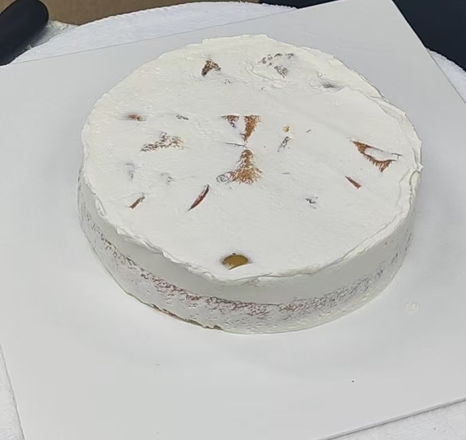

原味戚风
牛奶：18g
油：18g（没有味道的油，如玉米油、色拉油）
蛋黄：35g——3个蛋黄
低粉：25g（所有低粉默认过筛）
蛋白：70g——3个蛋白
糖：38g
盐：0.5g（不加也没问题）
塔塔粉：1g
操作
奶油和油搅匀，使其乳化，没有油星在表面，有点像稀酸奶的状态
加入蛋黄搅匀
加入低粉过筛，搅匀，形成面糊，
将蛋白、糖、盐和塔塔粉一起打至鸡尾状。判断蛋白有没有打好的另一个标准：把碗倒放，蛋白不会留下来
- 注意：水，油脂（蛋黄里面也有油脂）都可能让蛋白打不起来
将蛋白分两次加入面糊拌匀。（见视频001）
将上述材料倒入戚风模具中，倒入的时候可以振两下，把表面振平，放入烤炉烤
- 风炉：140℃，烤50min
- 平炉：上火160℃，下火150℃，烤50min
- 以上只是参考，不同品牌的烤炉情况不一样，需要自己调节
吉利丁块
纯净水：60g
吉利丁粉：10g
吉利丁片放入冷水泡软就可以用了
制作吉利丁块的水粉比：水：吉利丁粉=5:1或者6:1
操作：
吉利丁粉加入热水，混合均匀，冷藏备用，可用一个星期
香草糯米甜杏
香草裱花奶油
小份奶油：30g
香草：1/4
白巧克力：15g
吉利丁块：4g
大份奶油：56g
操作：
将香草荚和小份奶油一起煮沸，然后关火，接着浸泡5分钟
注意：香草荚要剥开
将巧克力和吉利丁融化，拌匀
将融化的千克力和吉利丁加入前面的香草奶油之后，加入到大份奶油之中（用的时候在把奶油打发）
香草米布丁
牛奶：25g
小份奶油：25g
香草：适量（1/4根）
蛋黄：11g
糖：10g
吉利丁块：10g
熟糯米饭：40g
大份奶油：75g
操作
制作糯米粉：将糯米放入2倍清水浸泡3小时或者冷藏一夜，然后大火蒸15min，趁热取出，翻拌均匀，降温
将剥开的香草荚和小份奶油一起煮沸，然后关火，接着浸泡10分钟
将蛋黄和砂糖快速混合，打到发白。然后倒入上面的香草奶油中
==接着把3步骤的奶油小火或者隔水加热到82℃，加入吉利丁块，搅拌后过筛==
放入蒸好的糯米饭搅拌，混合均匀，降温到30℃
打发大份奶油到6~7成
- 5成发的奶油：酸奶状；8成分的奶油：凝固
将拌好的糯米的奶油（30℃）和6~7成发的奶油混合，放入模具，冷冻
这个模具就是一个圆筒，底部用保鲜膜进行简单的封口
在冷冻好的的米布丁上抹上40g的杏子果酱（见下方），再放回冷冻定型
香草抹面奶油
小份奶油：50g
香草：适量（1/4根）
大份奶油：90g
操作：
- 将香草荚剖开和小份奶油一起煮沸浸泡5min
- 按比例添加糖到大份奶油中（100g奶油加入7g糖）
- 倒入大份的奶油，充分混合均匀
- 放入磨具冷藏6小时
杏子酱
杏子果泥：90g
黄柠檬汁：2g
黄柠檬皮：适量
NH果胶粉：1.5g
砂糖：12g
操作
- 将杏子果泥、柠檬汁、柠檬皮一起放入煮锅
- 将果泥加热至45度左右，分次倒入果胶粉和砂糖的混合物，然后拌匀
- 加热到沸腾，保持30秒左右
- 将杏子酱过筛，放凉
夹心奶油
奶油：100g
糖：7g
百利甜酒：1g
奶油打到10成，搅动有明显阻力。这里的奶油一定要打硬一点，否则蛋糕很容易塌
一个戚风蛋糕的夹心奶油大概在300g-350g之间
各材料摆放顺序
将原味胚等比例分切割成三份
在原味胚上抹上夹心奶油
放入新鲜杏仁肉
抹入夹心奶油，并且压实
放入第二个原味胚
抹夹心奶油
加入冻好的香草米布丁（已经抹上了杏子酱一起冻），香草米布丁哪个面朝向奶油都可以
抹夹心奶油
加入原味胚
修一下侧面多余的奶油
剪掉上方蛋糕胚的边角，为之后的抹胚做准备
放入冰箱冷冻
冷冻之后，抹胚，需要表面尽可能光滑，垂直（指代上下一样大）
抹面奶油覆盖整个蛋糕（图片做的是《瓜汁美梅》这块蛋糕，抹的是杨梅奶油，所有蛋糕的抹面都是这样）
用抹刀把蛋糕表面抹光滑
用刮板把蛋糕抹垂直
装饰蛋糕：水果泡了果胶，目的有：①增加光泽，是的水果更好看；②防止水果氧化；③增加水果甜度
瓜汁美梅
红茶戚风配方
牛奶：20g
玉米油：18g
蛋黄：35g（3个）
低粉：38g
伯爵茶粉：1g
蛋白：75g（3个）
糖：38g
盐：0.5g
塔塔粉：1g
操作：
- 牛奶和油搅匀混合
- 蛋黄加入搅匀
- 过筛的低粉和伯爵茶粉加入搅拌
- 蛋白、糖、塔塔粉和盐一起打至鸡尾状，分次加入面糊搅拌均匀
- 入模具烘烤
酸甜杨梅酱
杨梅：400g
糖：40g（可以根据个人口感适当增加或者减少）
柠檬汁：适量
玉米淀粉：5g
水：20g
操作：
用新鲜杨梅：杨梅洗干净去核，放入糖和柠檬汁，腌制20min
用工厂做好的杨梅肉：杨梅肉加入糖和柠檬汁，不需要腌制
放入锅中，中小火加热至微稠
水和玉米淀粉搅匀，放入锅中，加热至浓稠
杨梅抹面奶油
淡奶油：300g
糖：21g
百利甜酒：适量（2g）
奶酪：30g
杨梅酱：50g
操作：
- 奶酪隔水（热水）搅顺滑
- 淡奶油、糖和酒一起打至凝固（10成发）
- 放入奶酪和杨梅酱，打均匀
各材料摆放顺序
具体操作参照：香草糯米甜杏
具体顺序：红茶戚风 – 西瓜（配方是麒麟瓜）– 红茶戚风 – 酸甜杨梅酱 – 红茶戚风 – 抹胚 – 装饰
装饰的水果没有抹果胶
蜜桃乌龙
乌龙茶抹面奶油
淡奶油：200g
白桃乌龙茶：8g
淡奶油：150g
操作：
- 乌龙茶和小份奶油一起煮沸，关火，然后浸泡10min
- 按比例添加糖到大份奶油中（100g奶油加入7g糖）
- 倒入大份的奶油，充分混合均匀
- 放入磨具（慕斯圈）冷藏6小时
乌龙巴伐利亚奶油
牛奶：35g
淡奶油：25g
白桃乌龙茶：3g
蛋黄：12g
砂糖：11g
吉利丁块：10g
打发淡奶油：80g
操作：
- 牛奶、乌龙茶和小份淡奶油煮沸，焖5min
- 蛋黄和砂糖搅拌均匀，加入到奶油茶中，再次加热成奶酱
- 过筛，滤掉茶叶，加入吉利丁块，搅拌均匀，降温
- 将奶油茶和6成淡奶油混合
- 放入磨具（5寸慕斯圈）冷藏（建议75g）
- 冷冻好之后，抹上50g桃子啫喱
桃子啫喱
白桃果泥：100g
白砂糖：100g
玉米淀粉：3g
吉利丁块：10g
操作：
- 将果泥、糖和玉米淀粉小火煮开
- 加入吉利丁块混合
- 将桃子啫喱降温到常温（50℃以下）
乌龙戚风蛋糕
牛奶：19g
玉米油：19g
蛋黄：35g
低粉：25g
研磨乌龙茶粉：1g
蛋白：70g
砂糖：25g
海藻糖：13g（海藻糖相比普通白砂糖甜度比较低，除此之外都差不多，没有海藻糖可以用白砂糖代替）
盐：0.5g
塔塔粉：1g
- 牛奶和油搅匀混合
- 蛋黄加入搅匀
- 过筛的低粉和乌龙茶粉加入搅拌
- 蛋白、糖、塔塔粉和盐一起打至鸡尾状，分次加入面糊搅拌均匀
- 入模具烘烤
各材料摆放顺序
具体操作参照：香草糯米甜杏
具体顺序：乌龙戚风 – 桃子 – 乌龙戚风 – 乌龙巴伐利亚 – 乌龙戚风 – 抹胚 – 装饰
桃子抹了果胶

椰香青柠凤梨
椰子裱花奶油
小份奶油：25g
椰子油：5g
椰子果泥：10g
椰子酒：6g
白巧克力：18g
大份奶油：75g
- 将小份奶油、椰子油、椰子果泥和椰子酒一起加热至沸腾
- 加入白巧克力混合均匀
- 最后加入大份奶油，搅拌均匀，放入冰箱冷藏（用的时候在把奶油打发）
青柠抹面奶油
小份奶油：50g
青柠檬皮屑：1g
大份奶油：100g
- 如果希望奶油的凝固效果好一些，可以加入吉利丁冻，老师加了14g
- 14g吉利丁冻=2g吉利冰片
- 将小份奶油和青柠檬皮一起加热，沸腾之后，关火，盖上锅盖焖5min
- 加入大份奶油（奶油可以适当加糖，老师的比例是100:7）
香草炒凤梨
凤梨块：170g
砂糖：5g
香草荚：1/6
- 将凤梨块、砂糖和香草荚放入锅中翻炒。这个一步主要是让凤梨块有香草味。
- 翻炒入味之后，就可以把水滤掉
- 可以适当放入酒，增加风味
- 如果觉得不够甜，可以增加砂糖，当然也可以不加砂糖
- 如果是菠萝，需要放入盐水中浸泡15min，盐水的比例为：300g水+1.5g盐
椰子青柠慕斯
椰子果泥：25g
香草荚：1/8
青柠檬皮屑：1g
吉利丁块：3.5g
白巧克力：17.5g
椰子马里布福（一种椰子味的酒）：2.5g
打发奶油：40g
- 椰子果泥、香草荚和青柠檬皮屑一起中小火煮沸
- 加入吉利丁块，融化
- 加入白巧克力，融化
- 椰子马里布福加入到奶油中，一起打发到6成发（奶油里面还可以加糖，100g奶油加7g糖，觉得太甜，可以少加）
- 把椰子果泥的酱汁与打发的奶油混合
- 倒入模具中，放入冰箱冷冻
凤梨青柠檬果酱
宝茸凤梨果泥：90g
香草荚：1/4根
青柠檬皮屑：1/4
青柠檬汁：12g
白砂糖：12.5g
NH果胶粉：1g
将宝茸凤梨果泥、香草荚、青柠檬皮屑和青柠檬汁一起加热到45度
将白砂糖和NH果胶粉混合，分次加入凤梨果泥中
同时用蛋抽搅拌，直至沸腾
沸腾后，继续加热2分钟，然后过筛，冷藏保存在裱花袋中
凤梨青柠檬果酱冷却之后，可以抹在椰子青柠慕斯上

椰子戚风
椰浆：20g
椰子油：9g
玉米油：9g
蛋黄：35g
低粉：25g
椰浆粉：10g
蛋白：70g
砂糖：38g
海盐：0.5g
塔塔粉：1g
- 椰浆、椰子油和玉米油搅匀
- 加入蛋黄搅匀
- 再加入低粉和椰浆粉，搅匀，无颗粒，液体比较柔顺
- 蛋白、砂糖、海盐和塔塔粉一起打发至鸡尾状
- 将打发的蛋白和面糊混合
- 放入模具中烤
各材料摆放顺序

具体操作参照：香草糯米甜杏
具体顺序：椰子戚风 – 凤梨 – 椰子戚风 – 椰子青柠慕斯 – 椰子戚风 – 抹胚 – 装饰
装饰主要用到了烘干的菠萝片和菠萝
紫苏蜜瓜
香草戚风胚
牛奶：18g
香草荚：1/4根
玉米油：18g
蛋黄：35g（3个）
低粉：25g
蛋清：75g（3个）
糖：25g
塔塔粉：1g
盐：0.5g
- 牛奶、香草和玉米油煮沸，焖10min，捞出香草荚
- 加入蛋黄，搅匀
- 加入低粉，搅匀
- 蛋白、砂糖、海盐和塔塔粉一起打发至鸡尾状
- 将打发的蛋白和面糊混合
- 放入模具中烤
紫苏巴伐利亚
紫苏：7g（紫苏叶）
牛奶：25g
小份奶油：25g
蛋黄：12g
糖：12g
吉利丁块：10g
大份奶油：80g（要打发）
- 紫苏、牛奶和奶油煮开，焖10min，然后过筛，如果最后的液体不足50g，就再加入牛奶，补到50g
- 将糖和蛋黄一起用蛋抽打发，打到泛白
- 在打发好的蛋黄，加入到紫苏的牛奶里面，并再次煮到82℃
- 加入吉利丁块，融化，冷却到常温
- 加入打发到6-7成的奶油
- 翻入到模具中，冰冻
- 将冰冻好的的巴伐利亚，抹好蜜瓜啫喱。每个巴伐利亚80g蜜瓜啫喱
紫苏抹面奶油
奶油（1）：100g
紫苏碎：10g（紫苏叶）
奶油（2）：100g
盐：1g（可选）
糖：14g（可选，也可以根据个人口味增加或减少）
奶油（1）和紫苏叶一起煮沸，然后焖5min
加入奶油（2），用均质机打碎紫苏叶。目的是为了让奶油更有紫苏味，没有均质机也可以。直接加入奶油也可以。
奶油过筛，冷藏6小时以上。用的时候打发
各材料摆放顺序
具体操作参照：香草糯米甜杏
具体顺序：香草戚风 – 蜜瓜（这个蜜瓜用的是边角料）– 香草戚风 – 紫苏巴伐利亚 – 香草戚风 – 抹胚 – 装饰
装饰的水果有抹果胶，圆圆的是蜜瓜，用勺子挖圆的
伯爵奶茶脆啵啵
红茶戚风
牛奶：20g
玉米油：18g
蛋黄：35g（3个）
低粉：38g
伯爵茶粉：1g
蛋白：75g（3个）
糖：38g
盐：0.5g
- 牛奶和油搅匀融合
- 加入蛋黄，搅匀融合
- 加入低粉(过筛)和伯爵茶粉，搅匀融合
- 蛋白、糖、塔塔粉和盐一起打至鸡尾状，分次加入面糊中，搅拌均匀
- 入模具烘烤
红茶奶冻
吉利丁片：5g（注意，是吉利丁片不是吉利丁块）
牛奶：200g
奶油：70g
红茶：3-5g
糖：20g
- 吉利丁片用冰水泡软
- 牛奶、淡奶油、红茶和糖用中小火煮开，焖5-10min，然后过筛
- 加入吉利丁片，化不开可以隔水加热
- 导入模具，冷藏备用
焙茶奶油
奶酪：40g
焙茶粉：3~5g
奶油：300g
糖：30g
咖啡酒：4g
- 奶酪搅顺滑，加入焙茶粉，搅均匀
- 奶茶、糖和咖啡酒打至5成发，再加入上一个步骤的奶酪，打至凝固
- 这个奶油既作抹面，又作裱花
各材料摆放顺序
具体操作参照：香草糯米甜杏
具体顺序：红茶戚风 – 黑糖脆啵啵（缝隙用奶油填满）– 红茶戚风 – 红茶奶冻 – 红茶戚风 – 抹胚 – 装饰
转载请注明来源，欢迎对文章中的引用来源进行考证，欢迎指出任何有错误或不够清晰的表达。可以在下面评论区评论，也可以邮件至 1909773034@qq.com